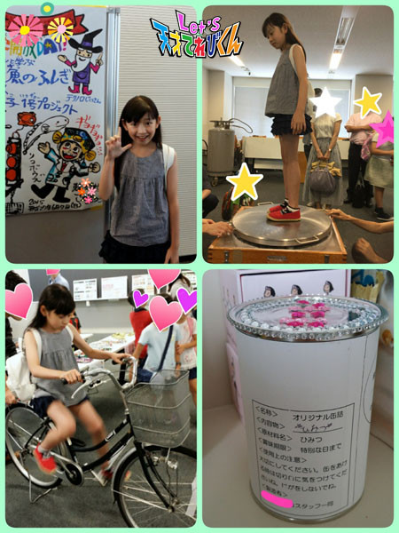

<<2015年6月 | トップページ | 2015年8月>>
2015年7月
『 暑い日にはLet's ◯◯ 』［瀧澤翼］
こんにちは！
夏休みの宿題がなかなか進まない瀧澤翼です！
さぁ、今回のテーマは『 暑い日にはLet's ◯◯ 』ですね。
梅雨明けする前から毎日暑かったですねぇ f ^_^;
そして夜も暑くて、気がつくとジワジワ汗が出てきます・・・（?＿?；）
暑さで眠れない日が続いて寝付けない (>_<)
そんなときに、
僕はこの暑い夜を乗りきるためにある物を使います！！
それはアイス枕です！！
これはお父さんがやっていたのをマネして始めました (^o^)/
シンプルだけど、すごく気持ちよくて
エアコンや扇風機がなくても眠れるのです (_ _).｡o○
これで暑い夜も乗りきれます！！
なんかテレビショッピングみたいになっちゃった（笑）
今夜もひんやり気持ちよく・・・
Let's おやすみなさい ☆☆☆
投稿者:瀧澤翼 | 投稿時間:18時45分 | カテゴリ：てれび戦士 | 固定リンク
『 暑い日にはLet's ◯◯ 』［原田明莉］
★Hello★
明莉です！！
夏休み終わったら修学旅行！！
楽しみッ (^^)
さてさて、今回のお題は
『 暑い日にはLet's ○○！ 』
です！！
暑い日にはLet's ○○？
暑い日に何かやったって暑いもんは暑い！！
でもでも、暑いときにハマるご飯があります！
冷やし茶漬け
です！
普通のお茶漬けに氷を入れて冷やして食べるんです！！
めちゃめちゃおいしくてすごくハマります！
夏休み前とか、しょっちゅう寝坊してたんですけど、
冷やし茶漬けなら、簡単で早くスルスルーと食べられるので、
そんなときにもいいんです ^ ^！！
あとあと、
暑いと食欲ってなくなっちゃいませーん？
けど、冷たいお茶漬けだと、体がちょっとは涼しくなるし、
おいしいので私は何杯でも食べられちゃうんです (｡-_-｡)
特に、梅干し味は、体にとても良いって感じがするのでオススメです！！
それとそれと・・・
去年の『 夏ならではのお楽しみ 』っていうテーマでワンピースが寝やすい！！
って書いたじゃないですかー！
それ、今年も着ましたよ！^o^
 それは、
それは、
やっぱ寝やすいです！！
あ、ワンピースと一緒に氷マクラのことも書いたんですけど、それも使ってます！！
みなさん、暑い夏を元気で健康に過ごしましょーね！！！
★ Let's coolly ★
投稿者:原田明莉 | 投稿時間:18時54分 | カテゴリ：てれび戦士 | 固定リンク
『 暑い日にはLet's ◯◯ 』［辻村晃佑］
どうもーー 辻村晃佑です (*￣∇￣)ノ（夏休みでテンション高いです）
僕は、最近あることを始めました！
そ・れ・は筋力トレーニング！略して筋トレを始めました！ (^○^)
だんだんその効果を実感してきましたよ！
まぁ、おなかはほっといてください （ あまり効果が出ない (´д｀|||)）
それはさておき、今回のお題は『 暑い日にはLet's ◯◯ 』かー
やっぱり夏といえばいろいろな食べ物が旬ですね！
ということで、暑い日はその食べ物を使って暑さをしのぎましょう！
やっぱり夏といえば夏野菜。
なすやカボチャ、きゅうりにトマト・・・
旬でおいしいし、体も冷やしてくれて一石二鳥！
暑くて仕方がないときには、熱いものや、からいものを食べること！
こういうものを食べると、汗をかいて体を冷やしてくれるのです！
いやー食べ物はすごいな～
おいしいし、いろいろな良いことがおこるから
やっぱ食べ物は偉大だなー ( ；∀；)
今年の夏はおいしい食べ物で乗りきろう (o^-')b ！
Let's！
投稿者:辻村晃佑 | 投稿時間:18時45分 | カテゴリ：てれび戦士 | 固定リンク
とっておきの『夏の思い出』［杉本瑛］
皆さん、ボンジョールノ！（イタリア語でこんにちは）
瑛です☆
今回のお題は「 とっておきの『夏の思い出』 」です！！
とっておきの夏の思い出といったら、アレしかないです。
去年、前川清さんの納涼公演に出演させていただいたことです (^O^)
あのときはとても楽しくて、
初日が始まったと思ったら、すぐに千秋楽（せんしゅうらく）になってしまいました。
前川さんの歌「ひまわり」の歌詞にあるように
夢を見ていたような日々でした。
始まる前はとーっても緊張するけど、
始まったらお客様にいい舞台をお見せしなくちゃという責任を感じて、身が引き締まります。
それに、最後に退場するとき
花道からお客様の笑顔を見るのが、最高に楽しいんです！
もう一度、あの夢のような時間を過ごしたいから、
これからも演技や日舞のレッスンをがんばって、
いつか座長になって公演をしたいです ＼(^o^)／
投稿者:杉本瑛 | 投稿時間:18時45分 | カテゴリ：てれび戦士 | 固定リンク
とっておきの『夏の思い出』［齋藤茉日］
こんにちは～
茉日です^ ^
皆さん！
今年の夏休みは何をして過ごしますか？
夏休みに限らず、夏にしたいこと。
私はまだ決まっていません >_<
何をしようかな？
なら、皆さんのとっておきの『 夏の思い出 』ってなんですか？？
今回は、それがテーマです ♪(´ε｀ )
私はいろいろ思い出ありますね！！^ ^
毎年、夢の国に遊びに行っていることもそうですし、^ ^
おばあちゃん家に行って遊ぶのも、花火をするのもそうです ^ ^
そのほかにもいろいろな思い出があります！
その中でも私の「 とっておきの『夏の思い出』 」は、
お誕生日です ^ ^
私は夏生まれなので、お誕生日がいつも夏です ^ ^
↑ あたりまえです笑 言いかた変えただけですね笑
やっぱりどんな年でも、誕生日はうれしいものです ^ ^
朝起きてきたら、お母さんやお父さんが
「おはよう！お誕生日おめでとう！」
と、言ってくれることが、何となく毎年恒例のあいさつになっています！
去年からこの法則に気づいて、私は寝る前に、
「今年もちゃんと言ってくれるかな？」
と、ドキドキしたの覚えてます笑
去年は、家族でレストランにいきました！
おいしそうでしょう？？
おいしかったです！！笑
テーブルクロスには Happy Birthday と書かれていて、
食後のデザートまでお誕生日仕様になって出てきて幸せでした～ ^ ^
そして、レストランにピアニストの女の方がいて、
何曲か曲のリストを持ってきてくださって、
その中から選んだ曲を生演奏してくれたんです ^ ^
友達や知り合いの方にはたくさんのプレゼントをもらったり。
普段行かないようなレストランに行ったり。
普段されないようなことをしてもらったり。
お誕生日って、まるで自分が主役になった気分になれますよね ♪(´ε｀ )
しかも、誕生日が楽しくてうれしくっても
１年に１回しかないっていうところがいいと思います～
ありがたみ。というか、大切に１日を過ごせますしね ^ ^
今年の夏はどんな夏になるのかな？
それでは！ 今回はこの辺で ^ ^
またね♪
投稿者:齋藤茉日 | 投稿時間:18時45分 | カテゴリ：てれび戦士 | 固定リンク
とっておきの『夏の思い出』［小澤竜心］
こんにちは！竜心です。
夏休みですねー。
うきうき、楽しみだなぁ～ (*´∀`)♪
ぼくの「 とっておきの『夏の思い出』 」は、
友達と一緒に水族館に行ったことです。
いろんな魚を見て盛り上がったなぁ～。
ペンギンのエサやりショーも、見ました♪
いろいろなクイズをしたりして、
とってもおもしろかったです(≧▽≦)
みんなでぬいぐるみを選んで、
ぼくは、「 ペンギン 」にしました。
魚のスタンプで、おそろいのTシャツを作って、
記念写真をとりました！
この写真入れは、お母さんと作ったんです (*/ω＼*)
Tシャツは、学校にも着ていきました。
そのとき、みんながびっくりしてたのも、
すーっごくおもしろかったです♪
夏休みは家族ででかけることが多いけど、
お休みの日に友達に会えるなんて、幸せです。
夏祭りとか、学校のプールとか、
花火したりするのも、
友達が一緒だと、すっごく楽しい～ ((o(^∇^)o))
今でも水族館は、大好きです。
でもやっぱり、友達と一緒に行った水族館が、
とっておきの思い出です (*≧∀≦*)
今年の夏も友達といっぱい遊ぶぞ～！お～～♪
投稿者:小澤竜心 | 投稿時間:18時45分 | カテゴリ：てれび戦士 | 固定リンク
とっておきの『夏の思い出』［飯島緋梨］
こんにちは！
飯島緋梨です(^_^)
最近手芸を教えてもらいました。
初めて作ったネコのサイフです。
手芸ってなかなか楽しくてハマりそう！！
今は羊毛フェルトに挑戦中です。
さて！
今回のお題は
「とっておきの夏休みの思い出」
みなさんにとっての
とっておきの夏休みの思い出は
何ですか？？
私は何と言っても
長野どちゃもん はくばまるを探しに長野県へ行ったことが
夏休みの思い出です！
あのときは・・・
はくばまるを仲間にするために大変だったな～！
ハチの子おやきを作ったり
キャニオニングしたり
でもでも超楽しかった（＾ω＾）
特にキャニオニングは
最初はこわかったし夏なのに寒かった！！
特にあのすべり台みたいなガケ！！
正確には岩？（でも緋梨には本当にガケに見えた！！）
でもやっているうちに楽しくなって
こわさも寒さも忘れて本当に楽しかった～
もう一度行きたい (^o^)
皆さんも夏休みは Let's キャニオニング♪
投稿者:飯島緋梨 | 投稿時間:18時54分 | カテゴリ：てれび戦士 | 固定リンク
とっておきの『夏の思い出』［小西憧弥］
こんにちは、憧弥です(^-^)/
ぼくの通っている小学校は、な・な・な・なんと！
７月17日が１学期の終業式だったんです！
だから夏休みが45日間で、いつもより４日長いんでーす！
うれしーーい（≧∇≦）
そのかわり宿題が多いかも・・・それは困るな・・・。
それではお題にいきます。
「 とっておきの『夏の思い出』 」です。
ぼくが３才の夏、初めて飛行機に乗って、沖縄へ家族旅行に行きました！
まだ小さくてハッキリと覚えていないけど、
とう明でプールみたいなキレイな海で、
カブト虫の浮き輪に乗って、浮かんでいたのを覚えています！
そのあと、どこの海に連れて行ってもらってもにごっていて、
今にもダツという口がとがった魚が飛んできそうで
泳ぐのがこわくてビビリまくりです (T_T)
また、あの底が見えるキレイな海で泳ぎたいなー。
あと覚えているのが、琉球ガラスを作っている所に体験しに行ったんだけど、
憧弥は小さすぎて、お姉ちゃんしか体験させてもらえなかったことが
すごくくやしかったです。
今行ったらちゃんと作れるのになー。
またお父さんとお母さんに沖縄旅行、頼んでみよっと！
今年の夏休みも、いっぱい思い出作るぞー！
投稿者:小西憧弥 | 投稿時間:18時45分 | カテゴリ：てれび戦士 | 固定リンク
とっておきの『夏の思い出』［桐畑カレン］
こんにちは。
カレンです (*^^*)
夏がく～れば思い出す～♪
いつもより夜ふかしができる！とか・・・
お友達といっぱい遊べる！とか・・・
すっごく「 か 」にさされちゃう (>.<)とか・・・
あれ、終わらせたはずの宿題がまだちょっと残ってた～。
お母さんにおこられる～ (゜ロ゜;とか・・・
夏の思い出はいろいろあります (^^)/
私の夏の一大イベントは、毎年いとこと行く夏旅行！
私・・・泳げるんですよ♪ クロールできるんですよ♪
それで、いとこと海に行ったときに、
初めてシュノーケリングにちょう戦してみたんです。
ちゃんとウエットスーツを着て、
シュノーケルとよばれる息ができるものを口につけて、
足にはフィンとよばれるお魚のひれみたいのをつけて。
少しプールで練習をしてから、船に乗って海にでました。
そして、せ～の！でゆっくり海の中へ！
まるで、気分は人魚姫～♪
（実は海に入るまでは、ちょっとこわかったんです）
海の中はすごくとう明で、太陽の光がキラキラしていて、
カラフルなお魚さんたちがスイスイスイって泳いでいて。
本当に本当にとってもきれいでした (*^^*)
☆☆ 海の中の宝石箱 ☆☆
あ～、泳げてよかったと思ったしゅん間でした。
今年の夏は、平泳ぎ（海の中で一番つかれない泳ぎ方だそうです）が
できるようになりたいです (^^)/
今年の夏もステキな思い出をたくさん作りたいな ♪
投稿者:桐畑カレン | 投稿時間:18時45分 | カテゴリ：てれび戦士 | 固定リンク
とっておきの『夏の思い出』［辻村晃佑］
どうも辻村晃佑です。
夏は暑すぎるーー
でも、夏休みだー！ (*^^*)
１年で一番長い休みだぞーーーーーー！！！！！！！ (о´∀`о)
あーーでも宿題めんどくさいな～～ (/´△`＼)
宿題は、いつも最後くらいまでためてっちゃうタイプだから
今年はなんとか頑張っていこうかな・・・ (´・ω・`)
でもやっぱ今年も気まぐれに
自由奔放（ほんぽう）にやってこーー ＼(^o^)／
今回は「 とっておきの夏の思い出 」だぞー！
やっぱり夏といえば、いつもと違うことをたくさーーーんできますね！
僕は毎年どこかに旅行に行っていて、
そのうち何回かは山梨の富士にある遊園地に行きました。
そこは絶叫マシーンをうりにしてるんですが
僕は絶叫は断じて無理です ( ・ε・)
あの心臓をえぐられるような感じが無理なんです・・・
そして僕は恐怖系も無理なんです。
小学校３年生ぐらいのとき、初めてそこのお化け屋敷に行ったのですが
入口から入ったとたんものすごく恐くなって
めっちゃ泣きました ( ノД`)…
おとうさんがおんぶして出口まで連れていってくれて
後ろにいた人にも「 大丈夫だよ 」とはげまされて・・・
一生忘れない思い出になりました ・゜・(つД｀)・゜・
トラウマになって、あれ以来、一度もお化け屋敷に行ってないなーー
今も多分むりだな (>_<)
もう何回も行っていてるけれど、その遊園地も毎年リニューアルしてるから
毎年新しい所に行くみたいで楽しかったなーー
今年の夏はどこにいこうかな～～～ ( ・∇・)
帰りはいつもぐったり・・・
投稿者:辻村晃佑 | 投稿時間:18時45分 | カテゴリ：てれび戦士 | 固定リンク
とっておきの『夏の思い出』［原田明莉］
★Hello★
ぱら田です！
ある理由があり、友達と朝６:３０に学校で待ち合わせして走ることになりました！
ちょっと報告してみました！！頑張ります！笑
はいはい、本題に入りますね！
今回のテーマは
「とっておきの『夏の思い出』」
です！！！！
夏休みのとっておきの思い出はー。。
んー。。？
いっぱいありすぎて！！！！
大阪に引っ越した大親友が帰ってきたりとか、
保育園時代の友達とおとまり会を開いたりとか！
けどね、私にはとっておきの思い出があります！！
それとは・・・
７年前の夏休み中に、弟が産まれたことです！！！
どこにも行くことのできない夏休みだったけど、とてもうれしかったです！
お母さんのお腹にいるときは女の子って言われてたんですが、
生まれる１ヶ月前に突然男の子ということがわかったんです！！！
そのくらい女の子みたいにかわいい弟なんですよ！
私は溺愛（できあい）してます！！ (^^)
これが夏休みの１番の思い出です！
これはもうお姉ちゃんになって２年目のときの写真です！
そしてもう１つのとっておきの思い出があります！
やっぱり大親友が帰ってきてくれることです！
会えたときは、幸せの中に自分が包み込まれてるようです！
でもお別れするときは寂しくないんです！
なんでか不思議なんだけど、また明日学校で会える気がするの！
でもそれって本当につながっている感じで、親友って感じがします！
今年の夏はとっておきの思い出を超えた思い出を作りたいです！！！
★Let's enjoy★
投稿者:原田明莉 | 投稿時間:18時45分 | カテゴリ：てれび戦士 | 固定リンク
とっておきの『夏の思い出』［瀧澤翼］
夏本番になってきましたね～！
実はかき氷が大好きな瀧澤翼です！
夏って１年中で一番思い出を作れる季節だと思いませんか？
去年行った沖縄や、毎年家族で行く近くの海も、み～んな最高の思い出です（＾◇＾）
今回のテーマは、「とびきりの夏の思い出」ですが、やっぱりバーベキューかなぁ。
僕のお父さんはバーベキューが大好きなので、
夏になると自宅や海の近くで知り合いとバーベキューをしに行きます (o^^o)
実は小さいころ、貝が嫌いで食べられなかったんですが、
夏のバーベキューで初めて食べた「 大アサリ 」にハマってから、
なんと今では大好物がホタテになるほどになっていました！
もちろんお肉や魚も大好きです )^o^(
僕にとって、とびきりの夏の思い出はバーベキューでーす *\(^o^)/*
こういう感じでお肉を焼いて・・・
よーし！今年もお父さんに、バーベキューをお願いしようっと・・・
Let's バーベキュー！！
投稿者:瀧澤翼 | 投稿時間:18時54分 | カテゴリ：てれび戦士 | 固定リンク
とっておきの『夏の思い出』［赤崎月香］
こんにちは ヽ(^▽^@)ノ
赤崎月香です。
愛知県での異次元獣との戦い！！
みなさんが協力してくれたおかげで
やっつけることができました～ (*￣0￣)/
ありがとう！！
私は、穴の開いたくつ下や、
いらなくなった物を捨てるときは、
必ず「 ありがとう 」を言ってから捨てます。
これは、小さい頃からの習慣です。
お世話になった物にも感謝しなくちゃね (^_-)---☆
異次元獣になったら困るし！！ (-ω-;)
愛知県もおいしい食べ物が
たくさんあるんですね！！
また遊びに行きたいです♪
☆。・:*:・°★,。・:*:・°☆
＝ とっておきの『 夏の思い出 』 ＝
いっぱいありますよ！(*'▽'*)♪
おじいちゃんのお家に行って、
いとこたちと海で食べたカキ氷～
海の匂いって、大好き♪
お友達と一緒に行ったプール♪
おこづかいを出しあって買った、
フライドポテトの味は最高でした！！
バーベキューのあとの花火大会。
家族で入ったお化け屋敷で、
ビビリすぎてダッシュで逃げたこと。
などなど・・・
☆。・:*:・°★,。・:*:・°☆
その中でも、一番心に残っていることは、
初めて髪の毛をショートにしたときのことです。
夏だし、暑いし、
学校でプールの授業もあるし、
毎朝髪の毛を結ぶのも面倒だし、ヽ(＠◇＠)ノ
えぇーーーーーい！！！！！
切ってしまえーーーーー！！！！！
,,,,,,,,,,,,(((*￣▽)8×"チョキチョキ！！
ってことで、バッサリ切っちゃいました♪
今よりも、もっともっと短かったんですよ！！
さっぱりして軽くなったし、
髪の毛を洗うのも、乾かすのも簡単♪
それ以来、ずっとショートのままです。(*^^*)
髪の毛をショートにしたら、
どこに行っても男の子に間違われます！(-_-;)
ラーメン屋さんに行ったら、
お店のおじさんに
「ぼく何年生？」って聞かれたこともあるし、
スカートをはいているのに、
「ぼく何才？」って聞かれたこともあります。
でも、全然イヤじゃないんですよ！(=￣∇￣=)ニヤリ
おもしろいから
男の子のまま通しちゃったこともあったし、
女の子だと気づかれたときに、
びっくりされることが楽しい♪
ヾ(＠>▽<＠)ノぶぁっはははっははは♪
さぁ！！！ 夏だよ！！！
ロングヘアの女子！！！
ショートヘアデビューしてみませんか？！
またね～ヾ(*'-'*)
投稿者:赤崎月香 | 投稿時間:18時45分 | カテゴリ：てれび戦士 | 固定リンク
とっておきの『夏の思い出』［林武尊］
こんにちは、林武尊です。
この前、移動教室で長野に行ったんですけど、
熱が出てしまって、参加できずに帰ってきました・・・
キャンプファイアーに山登りに林業体験、したかったなー (T＿T)
でも、せっかく長野まで行ったので、
上田駅の前にある銅像の前で写真を撮って、
たまたまいたゆるキャラの“なのちゃん”とも写真を撮りましたー (*´ω｀*)
ちなみに銅像の人は真田幸村という人です。
では本題へ。
今回はとっておきの夏の思い出です。
今回の長野のことも忘れられない思い出になりそうですけどね・・・・・・
まぁそれはともかく
僕の夏の思い出は、インドネシアのバリ島での思い出です。
まぁ・・・トラウマなんですけどね・・・
６才のとき、バリ島にいるお父さんに会いにお母さんの友達と行ったとき、
ホテルのプールに行ったんです。
そこで深い所に行ってブクブクと沈んじゃっておぼれそうになったんです ((((；゜Д゜)))))))
近くにいた外国人が助けてくれて、大丈夫だったけど、
毎年夏になると、このことを思い出します (>_<)
あー怖かったー
でもプールのこと以外は全部いい思い出でした。
海に泳ぎに行ったりお父さんとゲームで遊んだり。
プール以外は本当にいい思い出でした。
またバリ島にいきたいです！
投稿者:林武尊 | 投稿時間:19時10分 | カテゴリ：てれび戦士 | 固定リンク
自分にとって『特別な言葉』 ［齋藤茉日］
こんにちは～
茉日です^ ^
今回のテーマは「 自分にとって『特別な言葉』 」
です^ ^
私にとって特別な言葉は・・・
「 抱腹絶倒（ほうふくぜっとう）」です！
この四字熟語の意味は
【 お腹を抱えてひっくり返るほど笑うこと 】です！
毎日を大切に生きることが大切です！
なんてよく聞きますが、大切に生きるって言われても難しいし、
楽しい毎日を送れば大切に生きられる♪
って思ったんです(^-^)/
この四字熟語をなんで知ったか。というと
漢字検定を受けるために、四字熟語を勉強していたら
この四字熟語に出会ったのです^ ^
なんだか文字だけ見ると難しく感じるけれど、
意味を知ると、
素敵な言葉だな♪なんて思ったので紹介してみました(*^^*)
毎日をお腹を抱えてひっくり返るほど笑える日にする！！
ヨシ！！(^-^)/
でも、今回のテーマは『 特別な言葉 』なんですけど、
「 特別な 」というよりかは「 素敵な 」になっちゃいましたね (^-^)/笑
なので、
「 自分にとって『ステキな言葉』 」は、
★ 抱腹絶倒 ★
です！！
抱腹絶倒な毎日を送るぞ～♪
それでは！
今回はこの辺で^ ^

↑ 抱腹絶倒をイメージしました (´･_･`)笑
またね！
投稿者:齋藤茉日 | 投稿時間:18時45分 | カテゴリ：てれび戦士 | 固定リンク
自分にとって『特別な言葉』 ［辻村晃佑］
やっほーーー期末テストが終わったーーーー！！！！！！
これで１学期の残りは自由だー
どうも～！超ハッピーな辻村晃佑です♪
長いテスト期間が終わってよかった～
さて本題デース。
今回は「 自分にとって『 特別な言葉 』 」です！
特別な言葉、もちろんありますとも！
これです！
「 天才は１％のひらめきと99％の努力 」です。
この言葉は、どんな人でも努力と試行錯誤すれば天才になれるということ、と聞きました。
プロのスポーツ選手がとても良い例です。
プロになった選手は子どものころからその競技を毎日やっていたとか、
そういう話をよく聞きます。
天才どうしが競ってレギュラーが決まるから、これはとてもすごいことだと思います。
もともと才能がある人もいますが
その人も高い能力をもっと磨こうとして試行錯誤しているんだと思います。
つまり、天才＝努力家 なんです！
僕がこの言葉を好きな理由は、
自分で試行錯誤して生んだひらめきにあったぶん努力すれば
だれでも天才になれる、と思えることです。
やっぱこの言葉はいいな～
よし座右の銘にしよう( ・∇・)
山口県巌流島にて。
宮本武蔵も努力家だったのかな～( ・∇・)
投稿者:辻村晃佑 | 投稿時間:18時45分 | カテゴリ：てれび戦士 | 固定リンク
自分にとって『特別な言葉』 ［飯島緋梨］
こんにちは！
飯島緋梨です (^_^)
この前、運動会がありました。
すごくいいお天気で暑かったけど、
騎馬戦と徒競走とソーラン節、頑張りました *\(^o^)/*
小学校最後の運動会、
緋梨は赤組で、みんなで力を合わせて勝つことができました☆
さて！
今回のお題は「 特別な言葉 」。
みなさんにとって特別な言葉や
心に残っている言葉はありますか？
私にとっての特別な言葉は
【 ありがとう 】です。
私は家族やお友達、
もちろんてれび戦士や本当にたくさんの人にありがとうでいっぱいです！！！！
ふだんふつうに食べている食べ物も、
農家の人が育ててくれて
運んでくれたり料理してくれる人がいる。
自分ではまだ何もできないから
【 ありがとう 】とかんしゃしたいです。
学校でお友達に助けてもらったときに
【 ありがとう 】と言うと、
お友達にかんしゃの気持ちを伝えられたことがうれしくなります♪
【 ありがとう 】
いつも当たり前に使う言葉ですが
【 ありがとう 】と思う気持ちは、
すごく大切で、
とても特別な言葉だと思いました。
これからも私は【 ありがとう 】を大切にします！
Let's 【 ありがとう 】 (^o^)
投稿者:飯島緋梨 | 投稿時間:18時54分 | カテゴリ：てれび戦士 | 固定リンク
自分にとって『特別な言葉』 ［笹原尚季］
こんにちは！尚季です♪
中学生の方のお兄ちゃんの体育祭がありました。
ずっと雨だったけど、いい天気で良かった (^^)

そして、生放送終了後のLet's！
あれ？ 僕だけレッツの手じゃなくイェイ♪ になってる気が・・・ (^^)
いやいや、それよりも、課長は身長がすごく高いですね！
あこがれます☆
僕も課長と同じくらい大きくなりたいなぁ～ (o^^o)
毎日運動してるけど、なかなか10ｃｍ！！とかは伸びません。
でもちょっとずつ大きくはなっているはず・・・。
さて今回は、「 自分にとって『特別な言葉』 」です！
僕にとって特別な言葉は、
「おめでとう」という言葉です（≧∇≦）
この前そろばんの大会で優勝したときに
おめでとうと言われました！
すごくうれしかったです。
なかなかおめでとうって言われることってないし、
すごく頑張ったあとに言われたりすると、本当にうれしいです！
あとは、「 元気をもらってる 」という言葉。
これは最近まで、よく意味がわからなかったんです。
ちょっと落ち込んだときに、
身近な人や遠くにいる友達に言われたりして、とてもうれしくなりました。
「 あぁ、このことか 」って思って。
僕は「 元気をもらってる 」というみんなの言葉に、元気をもらっています♪
僕にも、みんなを元気にできることがあるなら、とてもうれしいです。
たったひと言だけど、すごくうれしくなって、
これからも頑張るぞっていう気持ちになります♪♪
だからこの２つが、僕の大切な、特別な言葉です ☆*:.｡. o(≧▽≦)o .｡.:*☆
投稿者:笹原尚季 | 投稿時間:18時45分 | カテゴリ：てれび戦士 | 固定リンク
自分にとって『特別な言葉』 ［杉本瑛］
みなさん、サラーム！（アラビア語で平安という意味で、あいさつに使います）
暑い日が続いてますね (ｰｰ;)
そんな時にはア・イ・スだー（＾∇＾）

今回のお題は
「 自分にとって 『 特別な言葉 』 」です。
瑛にとっての特別な言葉は
「 気合いと根性があればどうにかなる 」です！
これはママの口ぐせ。
いつもこの言葉で元気をもらってます☆
たとえば、大阪どちゃもん はまじゅんを仲間にしたときのミッション。
アメちゃんを100個集めると聞いたとき、正直ムリだと思っていました。
でも、気合いと根性で頑張ったら100個集まったし、
いろんな人がアメをくれたときのうれしさがハンパなかったです（≧∇≦）
金魚１号でどちゃもんの巣に入ったとき。
まだ毎回緊張するし、
最後のこちょこちょビームのときの時間がギリギリだったら焦ります。
でも気合いと根性で頑張れば
どちゃもんを守る、仲間にすることができるんです☆彡
たまに泣いちゃうけどね。
超次元帝国清掃課の人達は道具がたくさんあるけど、
私達てれび戦士は、
どちゃもんを守りたいっていう気持ちが強いから負けないんです（＾Ｏ＾）
みなさんには座右の銘や、大切にしてる言葉はありますか？
投稿者:杉本瑛 | 投稿時間:18時45分 | カテゴリ：てれび戦士 | 固定リンク
自分にとって『特別な言葉』 ［小澤竜心］
こんにちは！竜心です。
６月に、運動会がありました。
ぼく達５年生は、『 南中ソーラン 』を踊りました。
みんなでいーっぱい練習して、
とてもかっこよくできましたよー♪
初めての騎馬戦やリレーの選手も、
一生けん命がんばりました Ｏ(≧∇≦)Ｏ
来年は、組体操です！！！
みんなで力を合わせて、がんばるぞ～ o(^-^o)(o^-^)o
ぼくにとって 『 特別な言葉 』は、
【 初心忘るべからず 】です！
始めた頃のけんきょで真剣な気持ちを忘れてはいけません。
ということ (*´∇｀*)
ぼくは、何かをやってるときに、
だんだんなれてきちゃって、調子に乗ったりします。
そんなときにこの言葉を思い出して、初めての心にもどり、
シャキーン！！と、自分の中で反省します。
この言葉を知ったのは、
お母さんに言われたのが最初なんですが、
『 能 』 の 『 世阿弥 （ぜあみ） 』という人の言葉で、
ぼくが思ってたより、
もっと深～い意味があるそうです。
始めた頃のできなかったときの 【 初心 】 を忘れず、
いつも 【 初心 】 でまじめに稽古にはげみ、
さらに新しいことに挑戦する 【 初心 】 を持ち続ける！
なんか、かっこいいです。
この言葉は、
おじいちゃんになっても大切にしたいです (^o^ゞ
投稿者:小澤竜心 | 投稿時間:18時45分 | カテゴリ：てれび戦士 | 固定リンク
自分にとって『特別な言葉』 ［原田明莉］
★ Hello ★
明莉です！
最近、夜ふかししたせいか、身長がちぢんだりしてます！
伸びもしてるんですけどね！
それで、成長ホルモンがでるという22時には
絶対寝ようとがんばってるんです！
まだまだ身長を伸ばしたい原田です^ ^！
ではでは本題に入ります！
今回のテーマは
「 自分にとって 『 特別な言葉 』 」
です！
私にとっての特別な言葉はいっぱいありますよ！
いい名言探したりとか。
やっぱり全部ぜーんぶ、かっこよくて感動ですよ！
その中でも２つにしぼりました！
まず１つ目は
ドラマで聞きました！
「 強いものが勝つのではなく勝ったものが強い 」
という言葉です！
確かにそうだなと思いました！
私も空手の試合があると、
「 うわー。この子、去年の優勝者じゃん 」
とか、やっぱりすごい人って強い、っていう認識をしちゃうじゃないですかー！
でも、最初っからあきらめちゃダメってことなんですよね！
そして、もう１つ、私にとって特別な言葉があります！
それは
「 ねー。あ～ちゃ～ん。明莉ー。」
「 だ～はらちゃ～ん。だーはらー。原田ー！ 」
と、みんなが私の名前を読んでくれる声です！
学校では、あ～ちゃ～ん。とか、あかりー。って呼ばれるんです。
てれび戦士とかからは、だーはらー。とか、だーはらちゃーん。って呼ばれたり。
私の特別な言葉の２つ目 ^ ^
これって、すごくありがたくてうれしいことだと思いません？
当たり前のようだけど本当にうれしいヾ(＠⌒ー⌒＠)ノ
誰かが自分のことを必要としてくれてたり、話そうとしてたり、
大事にしてくれてる、っていうことでもあるんじゃないかなと思いました！
だから、私の名前を呼んでくれる声は
とても特別で大切な言葉だと思いました( ´ ▽ ` )ﾉ

みなさんにも特別な言葉というのはあるんじゃないですかね？
探してみるのも面白いかもですねー ^ ^
Let'sですよー！
★ Let's talk ★
投稿者:原田明莉 | 投稿時間:18時45分 | カテゴリ：てれび戦士 | 固定リンク
自分にとって『特別な言葉』 ［林武尊］
みなさん、こんにちは、林武尊です。
この前、水上バスに乗りました。
20分の短い間だったけど、
いつもと違う景色でとっても気持ちよかったです。
でも、雨が降っていて
２階のデッキには少しの時間しか出られなかった・°°・(＞_＜)・°°・。
また、晴れた日に水上バスに乗りたいです。
では本題！
僕にとって特別な言葉は・・・
「 七転び八起き 」です。
みなさん、この意味わかりますか？
七回転んでも八回起きる、
転んでも起きて転んでも起きてをくり返すんだけど、
八回起きるから転んだ数より起きる数のほうが多いんです。
つまり・・・・・・
最後は絶対に起き上がる。
失敗してもまた挑戦して、また失敗してもまたがんばって。
あきらめずにくり返すんです！
僕はこの言葉を聞いたとき、
何回もこんな経験したな～と思いました。
それは・・・
けん玉です。
この前、広島どちゃもん ぷうかの結婚式でやった技も、
何回も練習してやっとできた技です。
成功したとき「 やったー！ 」とテンションがすごくあがりました（≧∇≦）
だから「 七転び八起き 」は僕にとっての特別な言葉です。
投稿者:林武尊 | 投稿時間:18時54分 | カテゴリ：てれび戦士 | 固定リンク
21世紀調査活動情報！！［大野拓朗課長］
茶の間戦士諸君、久しぶりだな！ 大野課長だ！！
みんな聞いてくれ！！
今回、なんともうれしいことがあったから、みんなに自慢したくて・・・・・・
いやいや、お知らせしたくて、
このブログを書かせてもらうことにした。
実は、７月５日（日）、ほっともっとフィールド神戸にて、
オリックスｖｓソフトバンクの始球式を務めさせていただくことになったのだ！！！
ねえ、これすごすぎない？ すごいでしょ？
21世紀を知るために、俳優という仮の姿で活動してきた成果だ！
さすが私！！
ゴホン！
そこで、関西に住んでいる茶の間戦士諸君にお願いがあるんだ。
私の勇姿をぜひ球場まで応援しに来てほしい。
君たちのために、ズバッとカレーにひき肉を入れて
私の大好物であるキーマカレーを作っ・・・・・・じゃなかった。
ズバッと華麗（かれい）にストライクを入れるところを見てほしい！！
さあどんなオシャレをして行こうかな・・・・・・
あ、そうだ！ 野村靖さんに借りた着物を大切に持ってるから、
あれは子どもたちにも人気あったし、着物で出ちゃおうかな。
そしたら目立つぞー！！
うーん、でもいつもの私の一張羅（いっちょうら）も気に入ってるから
捨てがたいなあ・・・・・・・・・・・・
どうしよーーーー！！！
当日までワクワクしながら考えよっと。
それでは、君たちの声援を待っている！
レッツ、ほっともっとフィールド神戸！！！
投稿者:大野拓朗課長 | 投稿時間:18時55分 | カテゴリ：未来人 | 固定リンク
自分にとって『特別な言葉』 ［桐畑カレン］
こんにちは。
カレンです(*^^*)
山口どちゃもん ふくぺらぶうが登場したときに、
ふぐについて教えに来てくださった「さかなクン」。
そのときから大好きになってしまった私は、
この前ある大学に「さかなクン」のお話を聞きに行ってきました (^^)
お話のあとは、世界で１つだけのかんづめを作ったり、
自転車に乗って発電させて電車を走らせたり
（そういえば、栃木どちゃもん とちぼるたのときも自転車に乗って発電させたなあ）、
「超電導（ちょうでんどう）」とよばれる技術を使って、体がうくという体験をしてみたり、
とても楽しかったです (*^^*)

私にとって「 特別な言葉 」はですね～。
やっぱりこれです！
☆ありがとう☆
いつも感しゃの気持ちを忘れないようにしています。
そして、口に出すようにもしています。
言葉って、口に出したことが、本当にそうなっていく不思議な力があるみたいです。
ありがとうって人から言われると私はとってもうれしい (^^)
だから私もいつも言うようにしています！
☆だいじょ～ぶ！☆
なにか不安なことや、ちょっと失敗しちゃったなあ、と思うことがあっても、
「 だいじょう～ぶ！ 」と言ってもらえたり、心でとなえると、
なんかだいじょうぶになった気がする魔法の言葉です。
そして私の座右の銘は・・・
☆しんけんてきとう☆
この言葉は、宮崎どちゃもん てげてげのときに
ペアになった瑛ちゃんが言った言葉なのですが、
これを聞いたとき
「 おお～！なんて私にぴったりな言葉なんだ！ 」って感動したんです (^o^)
もちろん、いつも真剣です！
でも、うまくいかないときもあります。
そんなときは、ちょっとひと休み。
そうしたら、またチャレンジしたときに、うまくいくことも！
真剣ばかりだとつかれちゃいます (>.<)
たまには、適当に過ごすのも大切だと思ってます (*^^*)
投稿者:桐畑カレン | 投稿時間:18時45分 | カテゴリ：てれび戦士 | 固定リンク
ページの一番上へ▲